Conception visuelle
Identité visuelle, logos, affiches, chartes graphiques, mockups et supports de communication.
Designer graphique & motion designer
Technicien supérieur en art graphique et numérique. Je conçois des visuels, des vidéos et des animations qui transmettent un message avec clarté, cohérence et impact.
Créatif spécialisé en conception visuelle, montage vidéo et motion design.
Formé en art graphique et numérique à l'ISEP de Thiès (2023–2025), j'ai développé une approche polyvalente qui associe sens esthétique, maîtrise des outils de création et compréhension des besoins de communication.
Aujourd'hui, je mobilise ces compétences dans des projets de communication digitale et de marketing, avec l'envie de contribuer à des marques, entreprises et initiatives porteuses de sens.
Identité visuelle, logos, affiches, chartes graphiques, mockups et supports de communication.
Animation typographique et graphique, habillage visuel, transitions et narration animée.
Montage vidéo, rythme, transitions, traitement audio et finition.
Prise de vue, cadrage, composition, retouche photo, photomontage et narration documentaire.
Création de contenus, gestion des réseaux sociaux et planification des publications.
Conception de supports pour accompagner des campagnes et développer la visibilité d'une marque.
Identités de marque, chartes graphiques, photographie documentaire et campagne financière.
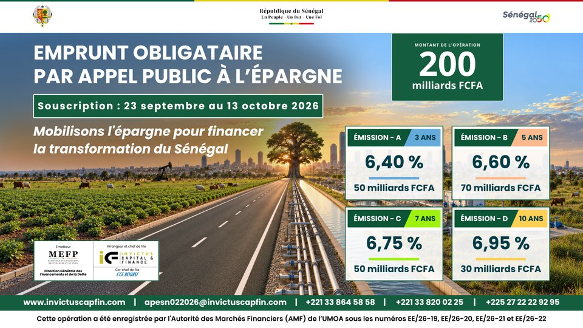
Contribution à la conception des supports de communication et de marketing d'un emprunt obligataire par appel public à l'épargne.
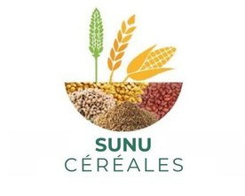
Identité de marque · agroalimentaire
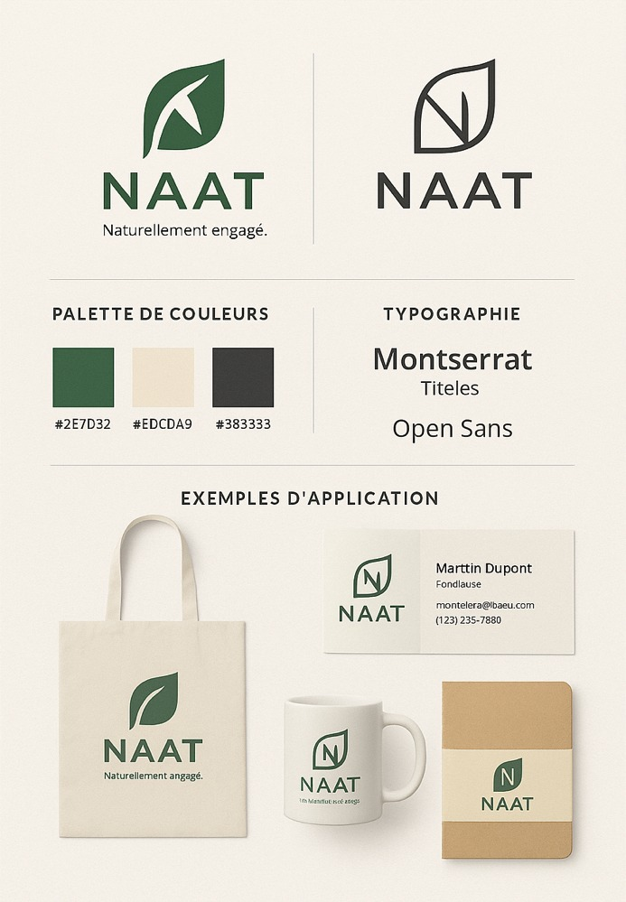
Je travaille la hiérarchie de l'information, les couleurs, la typographie et la composition pour rendre chaque support lisible et cohérent avec son univers.
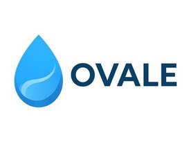
Une goutte et un nom en capitales, puis le logo appliqué sur une gamme de bouteilles de trois formats.
Application du logo sur supports
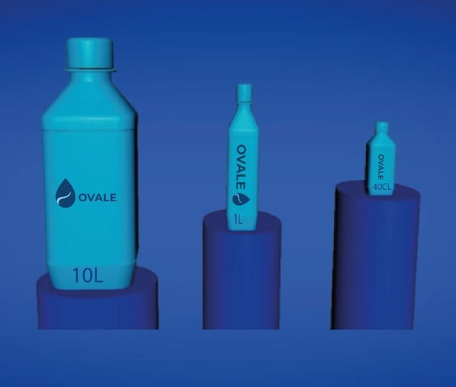
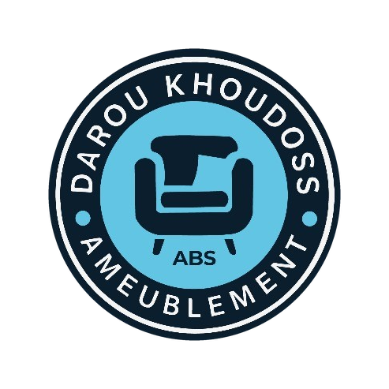
Un logo en badge circulaire autour d'un fauteuil, lisible en petit comme en grand, puis appliqué sur différents supports.
Application du logo sur supports
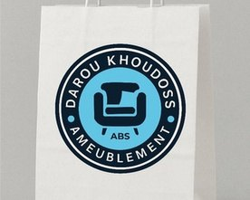
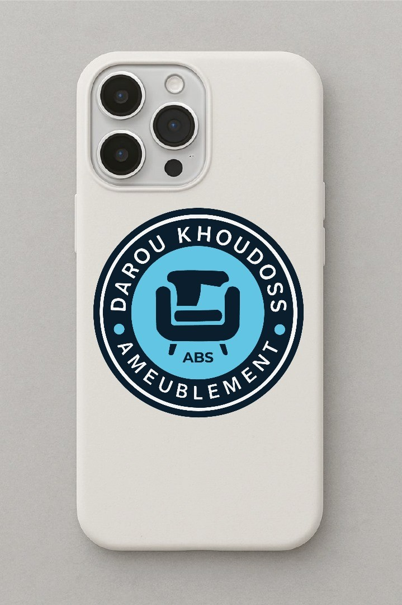
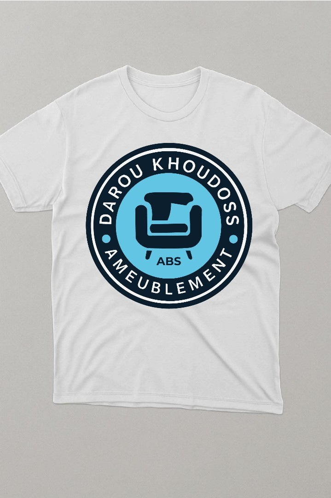
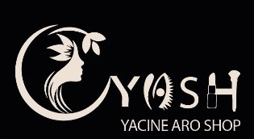
Le logo, puis son application sur sac, t-shirt et casquette, et ses 8 déclinaisons couleur, pour s'adapter à chaque usage tout en gardant la même identité.
Application du logo sur supports
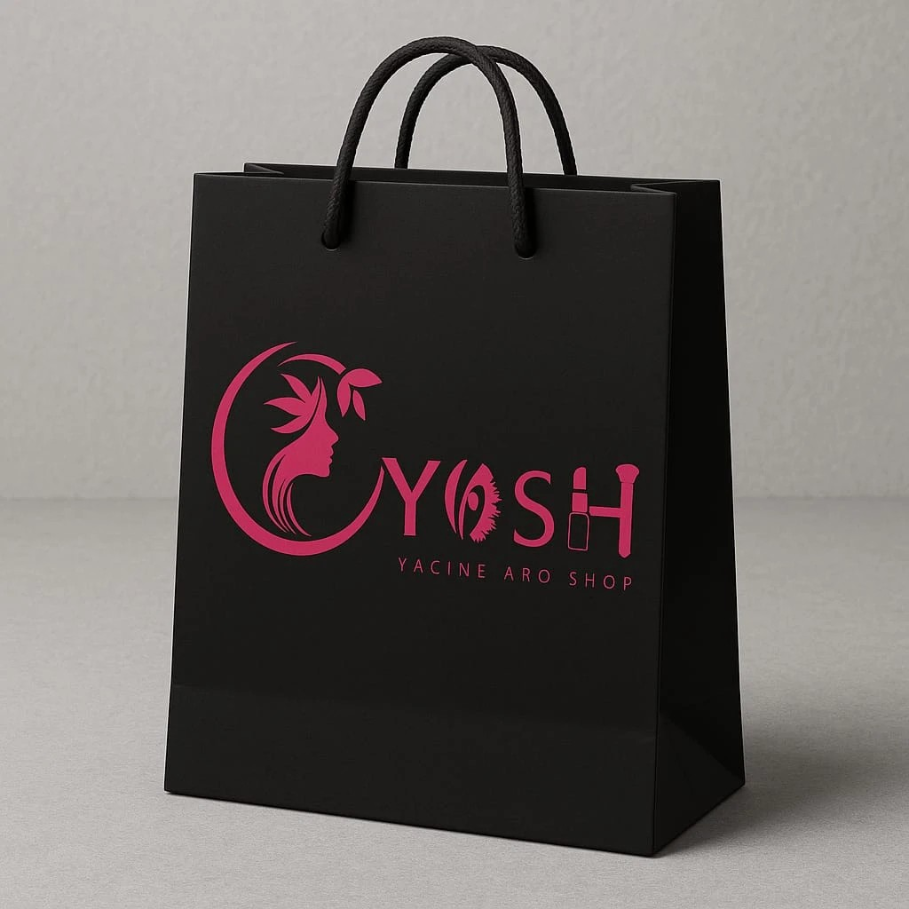
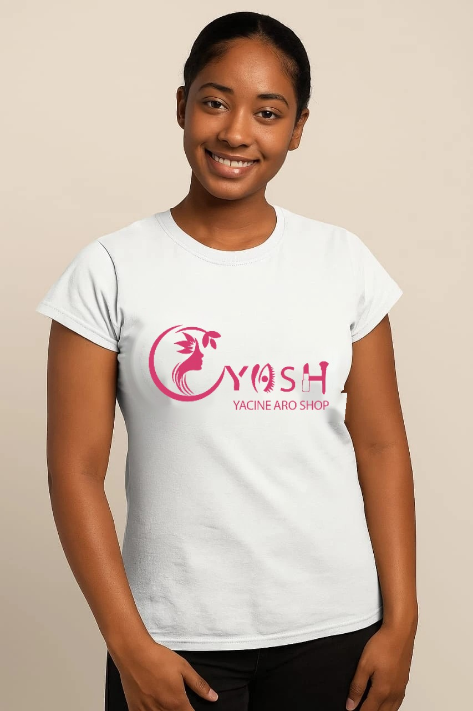
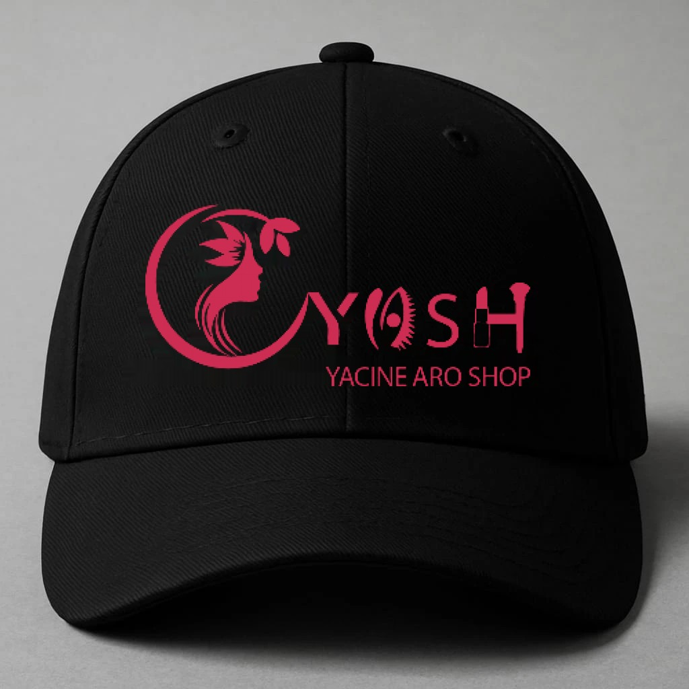
8 déclinaisons couleur
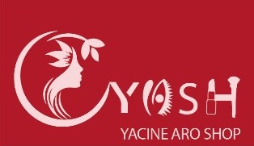
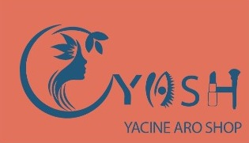
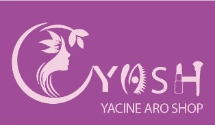
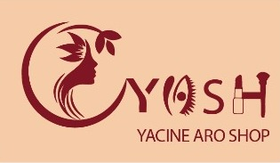
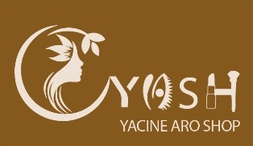
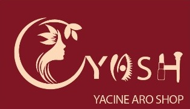
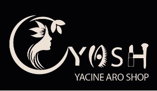
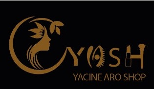
Série de portraits du directeur général : lumière naturelle, cadrages en pied, assis et au bureau, pour la communication institutionnelle.
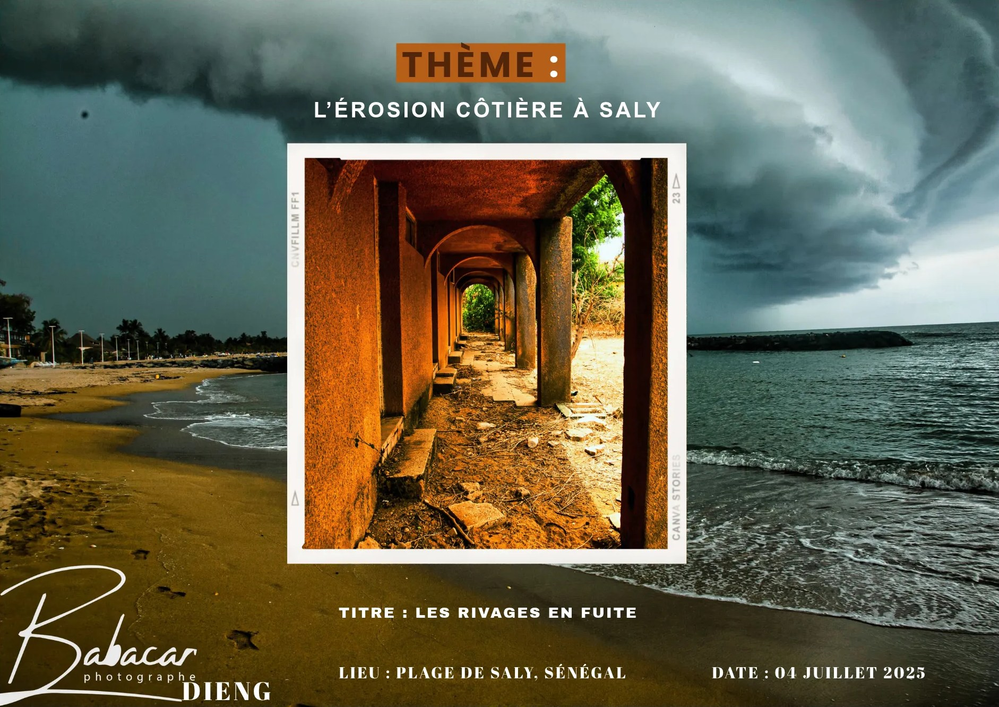
Une série qui documente les impacts environnementaux et sociaux de l'érosion sur le littoral, par l'observation, la composition, la lumière et la narration visuelle.
Film de présentation d'un fonds commun de titrisation : images, motion design, chiffres animés et voix off.
La technologie au service des services financiers : interfaces animées et voix off.
Série d'éducation financière : les notions expliquées en motion design.
Identité de série, typographie animée et pictogrammes.
Découpage des séquences, assemblage des plans, transitions, intégration du son et optimisation visuelle pour un rendu fluide et cohérent.
Animation typographique, formes graphiques, images et son : un message transmis de façon dynamique, avec une attention au rythme, à la fluidité et à l'harmonie.
15 Avenue Place 71, Dakar
Référent digital
Gestion de la communication digitale, création de contenus visuels et conception de supports de communication. Planification des publications et développement de la visibilité de l'entreprise sur les réseaux sociaux. Supports de communication et de marketing de l'APE SN02 2026 de l'État du Sénégal.
Dakar, rond-point JVC · stages pratiques
Graphiste & motion designer
Création de visuels et d'affiches promotionnelles pour les émissions télévisées, montage vidéo, habillage graphique et animations en motion design avec Photoshop, Premiere Pro et After Effects.
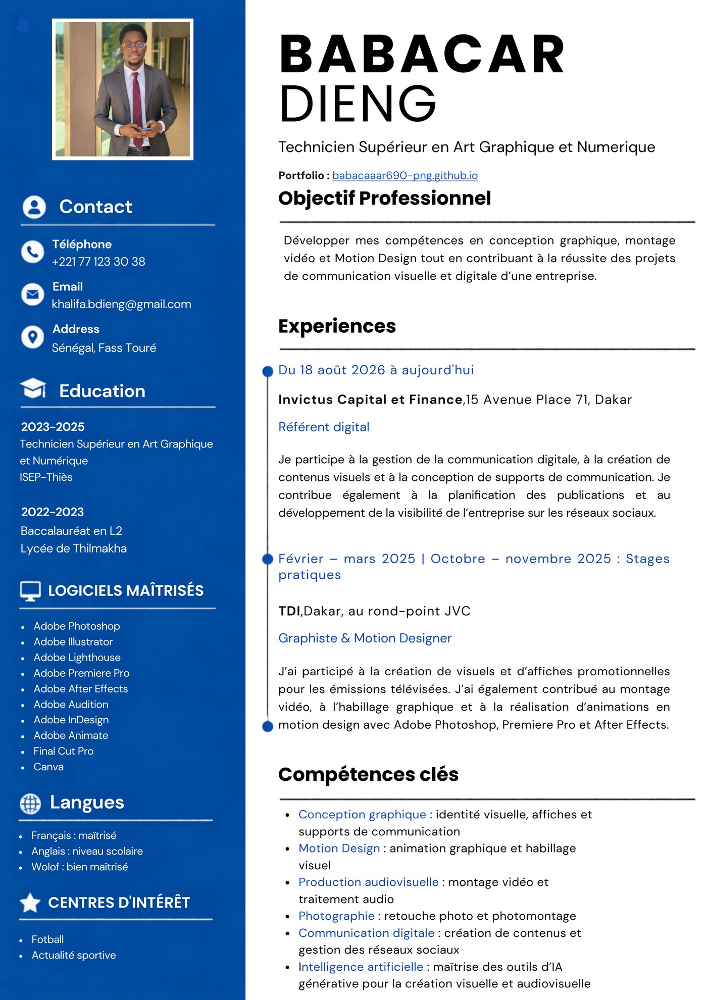
Les outils d'IA générative font partie de mon processus : explorer des concepts, développer des pistes visuelles, écrire des prompts et enrichir un workflow créatif, en gardant le contrôle sur la direction artistique.
Disponible pour des opportunités professionnelles, des collaborations créatives et des projets de communication visuelle, vidéo ou motion design.